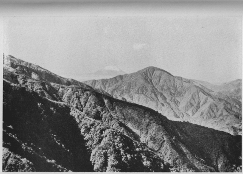

| マル及ムレについて | |
| 木暮 理太郎 | |
| (2015) | |
マル及ムレについて
木暮理太郎
本稿は昭和十一年十一月十五日霧の旅会で催した集会の席上に於て述べたもので、謂
わば私の物ずきな地名穿鑿
の際にふと思い付いた考
に過ぎないのであるが、山名や地名などを考証する場合、時としてはこうした方面も考慮に入れて然
る可
きではあるまいかと思うので、本誌に掲載して読者の一粲
を博することにした、何かの御参考ともなれば幸
である。
『甲斐国志』の提要の部を見ると、郡名の条に
都留郡（和名抄云二
豆留一
。残簡風土記云或連葛。云々。）連葛トハ富士ノ山足北ヘ長ク延テ綿連如二
蔓葛
一
然リ、方言ニ山の尾づる尾さきト云、後人代ルニ以二
鶴字一
為二
嘉名一
（本郡ニ有二
桂川一
。方言桂葛ノ訓相混ジ遂ニ転二
文字一
他ニモ此例多シ。）
とある。この「残簡風土記」というのは、和銅六年の制によりて編纂された「古風土記」の残簡ではなく、「日本総国風土記」なるものの残簡であると称せられるもので、全く後人の仮託に成り、多く信を措き難いものであることは、識者の既に論証しているところであるが、『甲斐国志』の編者は、この蔓葛を長く北へ延びた富士の山脚を指して云うたものと解釈して、これを都留
なる郡名の起りであるとし、後になって嘉名の鶴の字が代用されたことは、恰
も桂川の桂の字が蔓に縁のある葛であったのに、同訓相混じてこれも嘉名の桂の字が転用されるに至ったのと同様であるというのである。
然
し甲斐の国に残されたる「古風土記」の唯一の逸文（後に出す）に拠
れば、明
に鶴郡となっているのであるから、後人が嘉名の鶴の字に代えたのではなく、和銅以前から既に鶴の字が用いられていたのである、それが「風土記」を編纂する際に
畿内七道諸国郡郷名着二 好字一 。
又は
凡諸国部内（式の民部をいう）郡里等名並用二
二字一
、必取二
嘉名一
。
とある令に従って二字を用いる必要上、都留を好字として之
を採用することになったのであろう。さすれば「古風土記」の編纂者は、当然都留の二字を用いなければならない筈であるのに、依然として鶴郡とあるのは、恐らく朝命によるものであるとはいえ、「風土記」は性質上後世の書上げに似たものであるから、従来の慣習のままに鶴の字を使用したものらしい。それで詠歌の場合などには、後世迄常に鶴の意に用いられていたので、嘉名の鶴の字が蔓葛に代用されたもののように『甲斐国志』の編者は信じたものと想われる。其等
の歌は『夫木集』や『甲斐国志』に載っている。其
中の一首で『夫木集』にある権大納言長家の
中宮御歌合翫レ
菊といふことを
雲の上にきくほり植てかひのくに
つるのこほりを移してそみる
という歌には
此歌註云、風土記に甲斐国鶴郡有二
菊花山一
、流水洗レ
菊、飲二
其水一
人寿如レ
鶴云々。
とあって、これこそまさしく鶴郡の由来を説明したらしい「古風土記」の逸文であるから、鶴の字が古くから用いられていたことが察知されるのである。其他の
かひのくににまかり申に
忠岑
君かためいのちかひにそ我はゆく
つるてふこほり千代をうるなり
題不レ 知
八条院六条
よろつ代を君にゆつらむためにこそ
つるのこほりの早苗とるらめ
甲斐へまかりける人に遣はしける
伊勢
君か代はつるのこほりにあえてきね
さためなき世のうたかひもなく
の如き、皆これに依拠して鶴の意に用いられている。
『甲斐国志』はまた
里人云、古ヘヨリ本郡ニ白鶴二羽アリ、富士ノ麓吉田、明見、忍草等、水辺ノ地ヲ求メ常ニ遊ベリ、本ハ三羽ナリ、元禄十一戊寅三月一鶴死ス、里人公庁ニ訴ヘ、令シテ下吉田ノ北原ニ埋メ、塚ヲ築キ号二
鶴塚一
ト、今尚存セリ、蓋郡名ノ起ル所ナリト云。
といえる俗伝を古蹟の都留郡の部に掲げているが、尚
お「残簡風土記」の細註に郡留或は連葛とあるに拘泥して、
連葛ハ藤蔓ノ如シ、富士山ノ尾サキ長ク連リタルヲ云、皆つるト訓スヘシ。宗祗ノ旅日記ニ、日坂ニテ富士ヲ望メハ、南ハ険シク北ヘ長ク足ヲ引テ伏屋ノ形ニ似タリ、足柄嶺ニテ見ルモ同レ
之キヨシ記セリ、山ハ伏覆ノ義ナレバ、不尽不時等ノ仮名ヲ用フルモ皆伏ス意ニテ、其訓藤蔓ニ通ヒ、ふしトモつるトモ云ヘリ、云々。
と繰り返して蔓葛説を支持している。蜀山人
の『一話一言』にある「鶴郡鶴羽記」と題する文は
鶴郡属二
峡中一
乃在二
富岳之北一
、当初人王第七世、孝霊帝七十二年、秦始皇遣二
徐福一
、発二
童男女数十人一
、入レ
海求レ
仙、其処レ
謂蓬萊者蓋吾富士岳是也。徐福既至、而知二
秦之将乱一
也 留而不レ
帰、遂死二
于此一
矣。後有二
三鶴一
蓋福等魂之所レ
化云、其鶴常在二
於郡一
、故名焉。
とし、三羽の鶴のうち一羽は、元禄十一年三月二十九日に死んだので、吏員の検視を経て肉と翼とは東都に献じ、骨は下吉田村の福源寺に葬ったといい、『甲斐国志』の所伝と稍
異っている。残る二羽に就ては『国志』に何の記載もない。「鶴羽記」には、寛政六年三月に二羽とも吉田村に下りて、嘴
で羽を抜き、翩々
として白蓮の墜落するに似ているのを見て、犬が吠え人が集ったので、翼を聯
ねて天に沖し去り、遂に其所在を失った、そして翌年正月に等々力
村の万福寺の住僧がその羽の一を得て之を珍とし、竜鱗菴義端に依頼して之が記を作らしめたと述べてある。特筆に値する記事ではないが次手
だから紹介したに過ぎない。唯
生類憐愍
のやかましい元禄時代に、死鶴の骨を埋葬したことは首肯される。
菊花山については『甲斐国志』は
一、菊花山 大月駒橋両村ノ南ニアリ、或ハ駒橋村光照寺後ノ山腹ヨリ麗水湧出、末ハ寺ノ境内ニ注ギ、朝夕是ヲ汲、其山ヲ菊花山ト云トゾ。或云、大月ノ分界ニ山上ニ登ルコト六町許ニシテ、危岩峨々トシテ峙立セル所アリ、之ヲ砕ケバ菊紋アリ、此処菊花山ナリトモ云、何レガ正説ナルヤ分明ナラズ、大月、駒橋元一村ナレバ、山モ連峰ニテ分界ナシ、然レバ都テ此南山ヲ菊花山ト云シナルベシ。
と曰
い、前掲の長家の歌と其註とを載せて、
今残簡風土記ニ無二
此文一
、残篇ノ脱落ナルベシ、光照寺ノ後山麗水湧出ノ地能ク相適ヘリ、唯無二
菊花一
耳。
と説き、光照寺の後山を之に擬している、真偽もとより知るに由もないが、古伝の失われた後世に於て、強いて其所在を求めようとすると附会に陥る弊を免がれ得ぬであろう。ただし『延喜式』を見ると、典薬寮の諸国進年料雑薬の条に、甲斐国十二種黄菊花十両と載せてある。尤も下野、若狭、近江、阿波、讃岐の諸国からも黄菊花を貢進しているが、ともあれ甲斐と菊花とは縁がある。この黄菊花なるものは何であるか訓がないので不明である。同書附録の「和名考異」に拠れば
黄菊花 諸本不レ 注二 和名一 。案二 輔仁和名一 、加波良於波伎（医心方同。）順抄、加波良与毛木。医心方、又伎久。字鏡、辛 与毛支。康頼和名和名无。
とあり、即ち『本草和名』及び『医心方』に従えばカハラオハギ、『和名抄』はカハラヨモギ、『新撰字鏡』はカラヨモギである。狩谷棭斎は『箋注和名抄』にオハギはヨメナであると注しているが、是等
は原書を見れば孰
れも菊の和名であって、特に黄菊花に就ていえるものではないから、野生の菊花植物であることは確
でも、実物は何であるかを知り難いので、専門家の研究に待つことにする。勿論菊花山の伝説には、南陽酈県の菊水の故事が多分に取り入れてあることは疑いない。
余談はさて措き、都留郡は果して蔓葛から来たものであるか、或は鶴からであるか、それは読者の判断に任せるとして、私の考える所を述べるならば、これは韓語の野を意味するツルから来たものと思うのである。それには順序として都留郡の百済人に就て一言する必要があるので、暫く煩を忍びて以下記する所を読んで頂きたい。
『日本書紀』を見ると、天智天皇の五年冬に百済の男女二千余人を東国に居らしむとある、唯
東国とあるのみで国名は挙げてないから、甲斐が其中に含まれていたか否かは明かでない。その明かに甲斐国とあるものは、「持統天皇紀」に
二年五月戊午ノ朔乙丑、百済ノ敬須徳那利ヲ以テ甲斐ノ国ニ移ス。
とあるものが最初で、次は『続日本紀』の桓武天皇の延暦十八年十二月五日に
甲斐国人止弥若䖝、久信耳鷹長等壱百九十人言フ、己等ノ先祖ハ元ト是百済人也、云々。
とあるものであって、是等に拠りて百済人が甲斐に居住していたことを知るには充分であろう。
然らば甲斐の何処に居を占めていたのであろうか、高麗人が居た為に地名となった巨摩
郡はあるが、百済人が居た為に地名となった百済郡というのがない。『甲斐国志』は巨摩は駒に通じ、古く牧があり良駒を産した為の名としてあるが、高麗人が甲斐に居たことは国史に明文があるから、これは河内国に百済郷や巨摩郷があるのと同様に、高麗人に基づく称呼であると見る方が適切であるように思われる。
百済人の居住地であることを示す百済郡の例は、和泉国にはあるが甲斐にはそれがないので、別に他の方面から調べなければならない、ところが幸
に淳仁天皇の天平宝字五年三月十五日に
百済人伊志麻呂、姓ヲ福地造ト賜フ、
という記事がある、これは四年前の孝謙天皇の天平勝宝九年（即ち宝字元年）四月四日に、
其高麗、百済、新羅人等、久シク聖化ヲ慕ヒ、我俗ニ来リ附ス、志姓ヲ給ハランコトヲ願ハバ、悉ク之ヲ聴許セヨ、其戸籍ノ記、姓及ビ族字无キハ、理ニ於テ穏ナラズ、宜シク改正ヲ為セ。
との勅があったので、上申して姓を賜ったのであろう。上代に於ける三韓其他の帰化人は、一般に文化が進んでいたから、我国が彼地と関係の深かった頃は大いに尊敬され、その或者は朝廷にも重用されていたが、天智天皇の御代に任那の日本府を引払
って以来、次第に交渉もうすれ、遂には帰化人として賤しめられるようになり、改姓を希望する者が多くなったので、この詔勅が下されたのである。伊志麻呂と同日に高麗人後部王安成等二人も高里連を賜わり、十八年後の宝亀十年三月十七日には、高麗朝臣福信が高倉の姓を賜わった。福信は武州高麗郡の人で、従三位に叙せられている。更に二十年後の延暦十八年十二月五日には、甲斐の百済人止弥若䖝が石川、久信耳鷹長等が広石野の姓を賜わるなど、此等の時代には帰化人の改姓が盛
に行われた。
伊志麻呂が賜わった福地造は、福地の統治者又は支配者をさしていう姓
であって、また職名とも見られ、実際に於ては其土地人民を領有し、且
つ之を世襲することさえ稀ではない、造は御臣
の意である。
さてその福地の所在であるが、『和名抄』を調べて見るとフクチと云う地名は全国に二ヶ所あるのみで、一は信濃国伊那郡の福智郷、他は甲斐国都留郡の福地郷であって、百済人の多かった畿内地方には見当らないのである。そして其当時信濃国に百済人が居たか否かは明でないが、甲斐には前述の如く百済人が多かったのであるから、伊志麻呂に関係ある福地の所在は即ち都留郡であって、甲州の百済人はすべて此郡内に居住していたものと断定しても誤りはあるまいと信ずるのである。
都留郡の福地郷は、諸書皆今の鳥沢を中心とした土地であることに一致している。『甲斐国志』には
福地郷 按ルニ鳥沢辺左右ノ村落是福地郷ナリ、上鳥沢駅ノ南ニ一孤丘アリ、下ニ小祠ヲ置キ福地権現ト称ス、蓋シ郷中鎮守ノ神祠ナルベシ、里人今七福神ノ祠トシ福寿権現ト唱フ。寛文検地帳ニハ、此社ノ跡辺皆仮名ニテフクチト記タルハ誤ナルコト知ヌベシ。又隣村縄
ノ上小松明神文永癸酉（十年）年十二月十五日ノ棟札ニ、都留郡福地郷之上村トアリ、又鳥沢ノ南桂川ヲ隔テ藤崎村アリ、古検地帳ニ伏地埼、伏崎トモ記セリ、是又福地崎ナルベシ。駿河風土記ニ富士山ノ異字ヲ記シテ福智、不詩トモ見ユ、共ニフヂト訓スベシ。云云。
とありて、寛文の頃まで存続していたことは確かであろう。『国志』は検地帳にフクチと記したるは誤なること知ぬべしと書けるも、其理由は挙げてない。『駿河風土記』は所謂「総国風土記」と称するものの一で、信を措き難いものなることは前に記した通りである。唯『常陸風土記』に駿河国福慈岳とあるものは、福慈と書いてフジと読ませたらしい唯一の例であるが（これに就ては「二、三の山名について」の富士山の項参照のこと）、之を以て都留郡福地郷の『和名抄』（高山寺本訓布久知。）以来の古訓を誤りとすることは出来ぬのみならず、藤崎は明に伏地崎の転訛であることは言う迄もないことであろう。『東鑑』建暦三年（十二月六日建保と改元）五月七日の条にも、勲功の賞として鎌田兵衛尉に甲斐国福地を給うことが載せてある。其名がいつ頃から廃
れたかは知ることを得ない。明治七年十二月に全国に於ける町村の合併が行われた際、富士北麓の松山、新屋、上吉田の三村を合せて福地
村と改称したことは、甚だしく見当違いの場所へ持って行ったものであるが、福地と富士とを同一視した『国志』の編者の顰
に倣ったものででもあろうか、しかも尚お古訓を存してフクチと読ませてある。
福地は韓音恐らくポクチ、プクチ又は地をタンと読むものとすればポクタンであったろう。クダラは百済、伯済又は百残と書し、百残が最も古いとされている。百、伯はパィク、残はチァン、済はチエーであるから、百済人には百済の韓音に似通っている福地の姓を賜わったのであろうか、恰も高麗人の安成には高里連を賜わり、高麗朝臣福信には高倉を賜わったのと同様である。高麗は本来高句麗
で、高里はカクリ、高倉はカクラであるから、これもその本国名の音と似通っていることは、金沢博士が既に論じている。高にカクの音あることも『万葉集』に高山と書いて香久山に充ててあることから明かであろう。唯伊志麻呂が福地の姓を賜わった為に其地が福地と呼ばれるようになったのか、或は福地と呼ばれる地に居た為に福地造を賜わったのであるか、両者共に其例があるので遽
に断定することは許されない。しかし恐らく前者ではなかったかと推測する、そうとすれば福地権現は伊志麻呂か或は其祖先の霊を祀ったものであるかも知れない。
然るに又一方に於て福地のプクは、韓語のフーク又はフク即ち土
に通じ、チは蒙古語では人の義であるが、日韓共に威力ある神霊の尊称又は貴人の敬称となっている。イカヅチ（雷神）、カグツチ（火神）、ククノチ（木祖）、ソナカシチ（蘇那曷叱智、任那人）、モマリシチ（毛麻利叱智、新羅人）など其例はいくらでもある。すると福地は土の霊ということになって、我国の土の神である埴安神、又は国土の霊であると見てもよい国魂神と同じような意味になるのである。尤も各国にはそれぞれの国魂があって、敢て一神に限っている訳ではないが、孰れも其国土の霊を祀ったものであることは同じであった。福地権現は伊志麻呂が其領土の霊を祀った、国魂よりも遥
に狭義な神であったかとも考えられる。或はかく考えた方が正しいかとも思うのは、各所に福地に関係ある社があるからで、巨摩郡の河原部村即ち今の韮崎
町にある福地八幡なども、元は福地権現であったろう。若
し又富士山を国土の霊という意味で、国の鎮めに福地岳と崇めたものとすれば、チとシとの相違はあっても、福慈と書いてフジと発音して差支ないかにも思われる。勿論福の字が単独でフと発音されることは決してあり得ない。さすればフジの語原は韓語から来たことになるが、それは早くとも天智天皇以後のことでなければならなくなる。果して然るや否や。
それから又多摩郡の御岳神社の摂社に巨福社というのがあって、『新編武蔵風土記稿』は
巨福社 同ジ辺（本社ノ後ロ）ニアリ、大国玉命ヲ祝ヒマツレリ。近郷ノ人是ヲ耕作神ト呼ビテ、社前ノ土ヲ請持ユキテ田畑ヘホドコセバ、必五穀豊熟スト云、又報賽ニハ其郷土ノ土ヲ持来リ奉納セリ。
とし、『武蔵名勝図会』は
巨福社（西向、檜皮葺。本社のうしろにあり。）祭神大国玉命なり。按ずるに此神七名あり、大国主命とも称しけれど、其実は大己貴命にて、此神は土徳の神なれば即ち社稷の神と仰ぎ、云々。
といい、云々以下『風土記稿』に略々
同じく『郡村誌』には
巨福社アリ、祭神埴山姫神トイフ、御岳山ノ記ニハ大国玉命トアリ。社傍ニ二間余ノ凹所ヲ生セリ、此土ヲ撮テ少シク田畠ニ散布スレバ、虫害ヲ除クトテ参詣ノ人皆之ヲ取リ帰ルヨリ、斯ノ如キ穴ニハナリタリトイフ。
とありて、孰れも土地の霊を祀ったものであることを髣髴せしめている。フクチの上に大の意あるコを添えたので、肝心のチが脱離したのであろうか。上野原の西北に虎伏（今は小伏）があり、秋山には古福志がある。共にコフクシと読み、巨福と関係あるもので元は其社があったものと想われるが、今は其所在を詳
にしない。チがシに転ずることは歯音と舌音の通用から、シジム、チヂムなどの例もあり、必ずしも絶無であるとは断言し得ないであろう。多摩河畔の白丸村の字小吹には山の神の小祠が現存するのみであるが、巨福と関係があるらしい。南秋川沿いの笛吹は今はウヅシキと転訛しているけれども、元はウソフクで、それならばウソに笛の字を充てたのは、小鳥のウソの鳴く音から思いついたのであろうことが直
ぐ察せられる。このフクも福に縁があるのではないかと思われる。
『甲斐国志』に載っている鳥沢の大木明神は、今では福地神社と改称されているが、伊勢国河曲郡の大木神社と同様に祭神は不明である。これこそ或は当然あってよさそうな伊志麻呂か、然らざれば其祖先の霊を祀ったものではないかと想像される。しかし何等の根拠とするに足る可き資料のないのは遺憾である。山の形が扇に似ているので扇山の名を得、其処に祀られたので扇明神と呼んだのを後に大木と改めたか、或は大木明神から大木山と呼ばれ、後に扇と改められたか、これも今の所では解き難い謎である。アナシ峠の麓から見た山形は、如何にもよく開いた扇に似てはいるが。尤も新羅には大木（
子）百済には大木岳（大麓）という古地名がある。若し百済人が其故郷の地名を新住地に移したものとすれば、実際其必要があったのか、或は両地の間に何か似通った点があったのであろう。唯大木又は大木岳を何と読み、且それと同意語か又は義訳であろうと思われる
子も大麓も、何を意味しているかを知らないので、これには触れないことにして置く。
都留郡が百済人の居住地であったことは前記の通りであるから、其処に韓語の地名が残っているのは当然であると読者も合点されるであろう、それで私も都留は山の尾づるからではなく、野を意味する韓語のツルから来たものであると推断した次第である。そして『和名抄』の古郡郷は上野原附近であり、都留郷は大鶴村あたりであることに諸書皆一致して居るので、此等の地を含む一帯の原野が都留の本郷であったろう。従って鶴川や鶴島の名が今に存しているのも決して偶然ではない。桂川も『甲斐国志』のいう如く葛の字が桂に転じたのではなく、鶴川に対する大鶴川の意で、ツルに大の義あるカを添え、カツルと呼んだものがカツラとなったので、原を九州や奥州の一部でバルと呼ぶのと同じである。
ツルと云う地名は九州に多い、即ち肥後の玉名、鹿本二郡に亙
る菊池川の流域や、豊後の大分、直入、大野、南北海部の五郡に亙る大分川、大野川、中江川の諸流域にある津留、今津留、添ヶ津留、大津留、左津留、尾津留、志津留、桑津留、桑鶴、小野津留、小鶴などがそれで、単に津留と呼ぶ所は十数ヶ所を数えられよう。殊に大野川の下流では、尾津留、大津留、鶴瀬の諸村があって、最後に河口に近く鶴崎町のあることは、おのずから地形を説明しているようで興味深く感ぜられる。
因
に、朝鮮では鶴のことをツルミと云うているようであるが、鶴見町などは其儘
地名となったのかも知れない。『延喜式』には河内国若江郡に都留美嶋神社、渋川郡に都留弥神社というのが載っている、是等も鶴に関係あるか否か、他日の考究に待つこととする。
以上述べ来った所を約言すれば、甲斐には百済人が居住していた。其地は都留郡であった、従って其処に朝鮮語系の地名が現存していることは少しも怪しむに足らぬというに帰着する。これだけの事を知って頂けば、後は簡単に埒があく。
都留郡及び其四近には、丸と名の付く山が相当にある。試に之を列挙すると都留郡に
大幡村 本社ヶ丸
真木村 コンドウ丸 鎮西ヶ丸 大谷ヶ丸 大倉高丸 白ヤノ丸 赤谷ノ丸 鳥屋ノ丸 丸岳
などがあり、相模国に
中川村 畦ヶ丸
青根村 檜洞丸
佐野川村 茅丸
などがある。山頂が丸い為の名であるとしても余りに其数が多いので、誰しも奇異の感を抱かれることと思う。しかし此等の地方が百済人や高麗人に依りて早く開拓されていたことに注意するならば、或は其等の人々が将来した言葉ではないかとの疑を生ずるであろう。事実マルは山を意味する韓語に外ならないのである。
現在朝鮮では山をモイというている。しかし古くはモリであった、これはアイヌ語の小山を意味するモリと関係があるらしい、奥羽の山に何森と称するものの多いことを考うべきである。このモリがモロとなった例はあるが、モがマに転じた例はまだ思い当らない。金沢博士に拠れば済州島では今も平地に孤立した山をマルと称しているそうである。国語のヤマは南洋系のイエマ（森、藪）から来たものであろうという。
朝鮮では又
頭のことをモーリ或はモリと云う、恐らく山の古名モリと同じ語で、頭にも山にも通じて用いられたものであろう。アイヌ語のキムイも山の称呼であると同時に亦
頭の天辺をもそう呼んでいる。私共が或山を指して何の頭と呼ぶのとは、多少趣を異にしているが、根本に於ては通じている。モイがモリの変化したものであろうことは言う迄もあるまい。
ムレは、モロがムロとなりムレとなったのかも知れぬ、山をムレと読ませる例は『書紀』や『続日本紀』に多く載せてある。
辟支山 古沙山 谷那鉄山 帯山 久礼山 荷山 居層山 怒受利之山 任叙利山
などがそれであって、皆韓地の山である。斉明天皇の御歌に
いまきなる をむれかうへに 雲たにも
しるくしたゝは なにか歎かむ
とある「をむれかうへ」は即ち小山が上で、我上代でも山をムレと呼んだ証ともなるが、尚お韓語の匂が濃いようである。いまきは応神天皇の御代に阿智使主が十七県の党類を率いて来帰し、檜前
村を賜わった、新来の帰化人を居らしめたので今来の地名が生じたのである、今の高市郡はもと今来郡であった。雄略天皇の
やまとの をむらのたけに しゝふすと
と歌い給うた御歌は、『古事記』には
みえしぬの をむろがたけに しゝふすと
とありて、勿論今来のヲムレとは別の山であるが、ムラが山の義であるならば、ムレ、ムラ、ムロと通じて用いられた事になる、紀伊の牟婁
郡は即ち山の郡の義であろう。
ムレは九州ではツルと同じく豊後に多い、次に二、三の例を挙げると
能牟礼山 於菟牟礼山 猪牟礼山 栂牟礼山 角牟礼山 中津牟礼山 花牟礼山
などがある、外にもムレの付く村名が少くないのを見ると、ツルとムレとは影の形に伴う如く離れ難い関係があるようである。勿論他にも牟礼という地名は、周防、讃岐、大和、紀伊の諸国にもあれば、東京市外の三鷹村にもあり市内にさえあった。
『新編武蔵風土記稿』は云う、
多摩郡牟礼村
開発ノ年代ハ伝ヘザレド、新座郡小榑村ヨリ高橋図書ト云フモノ来リ発シトモ云リ。
新座郡は古の新羅郡で、帰化の新羅人を武蔵国の閑地に居らしめ、始めて新羅郡を置くと「孝謙天皇紀」に見えている土地である。又『新編江戸志』は云う、
むれゐ野
古老の云、今のおたんす町（小石川簞笥町）の辺より大塚、板橋境迄をすべて往古はむれゐ野といふよし、しかれば南の方は金杉村、北は吹上村の間をいひて、広き野成べし。
近くに指ヶ谷の地名あるを見れば、焼畑を作った韓人の部落が想像される。木の梢をウレ或はウラというのは、高い所をさす意味で、このムレから来たのではなかろうか、今は一般にウラが用いられている。川浦という地名は川の先という意であろう。『大言海』にはウレはウラエ（末枝）の約まったものと説明してあるが、ウラに就ては言う所がない。
国語の例からいえば、マからモに転ずるのが普通のようで、モト（元）はマト（真処）、モナカ（最中）はマナカ（真中）、モノ（物）はマナ（真名）の転であると大島博士は説いている。或は山の韓語はマルが最も古く、モロ、モリ、モイと転じ、その最古語のマルが済州島に保存されたのかも知れない。ムとモの通音なることはムクゲ、モクゲ（木槿）、ムグッチョ、モグッチョ（カイツムリ）、ムクムク、モクモク（形容詞）などの例に依りて知られ、ウとムにも亦ムマ、ウマ（馬）、ムメ、ウメ（梅）、ムナギ、ウナギ（鰻）、ムベ、ウベ（トキハアケビ）などの例がある。
前に書き洩らしたから茲
に補入して置くが、甲斐にもモリと名の付く山は可なりある、『甲斐国志』を一瞥した丈
でも山梨郡に石森、秀森、竹森、中津森、水ヶ森があり、巨摩郡に美森、黒森、石森、霧森、飯盛、大井森、離レ森、烏森、森山、鈴ヶ森、鷹森がある、尚お入念に図書を渉猟したならば更に多くを発見するであろう。是等は主に小山であってアイヌ語のモリと能
く一致している、しかもこの言葉は死語ではない、今も甲州の老猟師が往々口にする所で、雨畑
附近の猟師は笊
ヶ岳を笊ヶ森と呼んでいるのである。
都留郡にはマルの付く山は多いが、ムレは甚だ少なく僅
に四座あるのみである。
道志村 大群山 殿群山
西原村 大群山（権現山）
棡原村 小勢籠山
小勢籠山は小伏沢の南にある。△五四二・九であるように聞いた。殿群は今は鳥ノ胸と書し、トンノムネと呼んでいることを武田君から教えられた。ウソフクといいトノムレといい、転訛の甚だしいこと全く驚くに堪えたものである、地名考究の困難なる所以
のよき例であろう。

●大群山と富士山（焼山より）
山は少ないが其代りとして、大ムレ権現を祀った社は頗る多い、それがほぼ道志山塊を境として南北の二群に分れ、南に在る者は富士隠しの異名ある大群山を中心とし、北に在る者は権現山を通称とする大群山を中心としている。即ち
大室権現、長幡正八幡相殿（竹ノ本ニアリ。） 社地除地百九拾弐坪、神鏡七面金像ノ大黒アリ、長壱寸八分ノ立像ナリ、神刀壱振云々。
大室権現（久保ニアリ。） 大室権現（大渡ニアリ。） 同（月夜野ニアリ。） 社地百坪云々。祠官佐藤権太夫。大室ハ山ノ名ニテ本村（道志村）ノ東南ニアリ、高山ニシテ富士ノ東面ヲ蔽ヘリ、故ニ武蔵ニテ之ヲ富士隠ト云。此山上ニ神祠アリ大室権現ト号ス。（以上『甲斐国志』）
袖平峰 麓ヨリ頂ニ至ル凡三里半ニ余レリ、山上ニ大室権現ヲ祀ル。当村ニテ最モ高キ山ナレバ青根山トモ呼。仲夏五月ニアラザレバ宿雪消尽セズト云フ。
大室社 村持。（青根村）
大室社二 一ハ村ノ鎮守、例祭九月廿日、相殿ニ八幡山神ヲ置。一ハ神木ニ杉大樹（七囲許。）アリ、共ニ村民持。（中川村）
大室社 円鏡（径六寸五分余。）ノ中ニ神体（長サ三寸余。）ヲ鋳出ス、元禄十一年ノ銘アリ、（曰相模国宮原村大室権現、元禄十一年寅十一月吉日、神主宮崎津島守。）神主ノ伝ニ、古中川村大室権現社ノ神事ヲ此所ニテ執行スト、後其跡地ナレバトテ同社ヲ祀ルト云。（湯触村）（以上『新編相模風土記稿』）
これは南の一群でムレに室の字が充ててある、ムロと読むのであろう。之に反して北の一群はムレに多く勢籠の二字を用いているが、其理由は判断しかねる。大勢籠れば即ち大群であるという洒落でもあろうか。
大室社（千木良村）
大牟礼社（吉野宿）
王勢籠（於々勢以呂宇。）権現社 祭神ハ日本武尊ナリト云。（佐野川村）
太室権現社（小淵村）（以上『相模風土記稿』）
大室権現 社地壱畝拾五歩（上鶴島村）
王勢籠権現（トチ木ニアリ。） 小社、神領壱畝拾歩（駒宮村）
大室権現 社地三拾五坪（小篠村）
大勢籠 権現（西原、浅川、野田尻ノ堺大勢滝山ノ峰ニアリ。） 社人和見村ノ名主、神領和見村ニテ下畑弐畝歩、但無高、名主ノ家ノ西南山上ニ登ルコト壱里弐拾町ナリ、此神犬ヲ使フコト七拾五匹、此犬ヲ頼ム時ハ能ク盗賊火難ヲ防ギ守ルトテ、近郷ノ農人名主カ家ニ犬借リニ来リ、札ヲ請テ帰レバ犬必ズ来テ家内田畠ヲ守ルト云、但其形人ノ目ニ見ユルコトナシ、雇ヒ来ル日限迄キリ火ニテ飼ヒ料ヲ作リ供ヘ置ケバ則チ喰ツクスト云。
稲荷大明神 蘆垣村ノ産神也云々、末社四（オモリノ宮、大勢籠権現、云々。）
大勢籠権現（大倉村。） 社域見捨地水泉庵持。
大威籠権現（ヘハイニアリ。） 社域ハ見捨地社主宇源太。（以上『甲斐国志』）
右の如き分布の状態から推して、信仰の中心が二ヶ所にあったことは判断されるが、孰れが先に祀られたものか、或は同時であったか、奉祀の次第を知ることは得ないにしても、附近住民の信仰厚かりし大社であったことは想像される。然るに其祭神は全く不明である。『延喜式』に牟礼神社というのが摂津国三島郡と伊勢国多気郡とにあり、牟礼村という地名も残っているに拘
らず、其祭神に就ては説明してない、年代が古いので既に所伝が失われたものであろう、独り佐野川村のみ王勢籠にオホセイロウと読み方を注してあるのは、勢籠をムレと読むことが忘られて、大を王と改め、日本武尊
に附会したもので、信憑し難き説であることは一見して明かであろう。しかも大群山の存在が附近住民に多大の利害関係を及ぼしたとは思われぬから、山体を崇めたものともいい兼ねる。私の考では、これは矢張
り竜王即ち靇
神（八俣の大蛇）を崇拝する先住民の信仰が其儘新来の住民によりて継承されていた遺蹟であろうと思うのである。百済や新羅に阿良、鳥礼、尉礼、鳥也などの地名があったことから察すると、是等の国人の一部の間に靇神を崇拝する原始信仰が行われていたのであろうとは坪井博士の説である。阿良、烏礼等は孰れもアラー、ウラーの韓音を示す為に借用された漢字で、大蛇即ち竜王に外ならない。我国の古代民族にも靇神を崇拝したもののあることは、曾て「二、三の山名について」と題する文中に述べて置いた。百済人が本国からこの信仰を伝来したか、或は既に先住していた原始民族の信仰に合流したか、その孰れであるかは不明であるが、山と竜王とが既に因縁浅からぬ上に、ムレ、ウレ、ウラが又互に密接な関係を有しているので、文化の進んでいた百済人のムレと云う言葉の中に山も竜王も包含されて、ここに山を大群と呼び、奉祀の竜王をも大群と呼ぶに至った基をなしたのであろうか。殊に私をして大群権現が靇神であろうとの念を強く抱かせたものは、和見の大勢籠権現の記事である。今も狼のお札を出し或は狼を神使とする伝説を有する社は、武蔵国秩父郡の三峰
神社や両神神社を始め、丹後国加佐郡の大川神社、大和国吉野郡十津川の玉置神社、但馬国養父郡市場の養父神社、美濃国不破郡の南宮神社、遠江国周智郡の山住神社、備中国今津の奥に在りという木ノ山権現等であるが、現在の主祭神が何神にいまそうとも、狼を使者とする限り、元は靇神が祭られてあったので、畢竟
狼は靇神が時代の影響を受け、田畠を荒す猪鹿などの害獣を駆除する性能を失うことなく形態を変えて、後に祭神として奉斎された大神の眷属となったものに外ならないのであるから、大群権現即ち靇神であろうと推断した次第である。
以上がマル及びムレに関する私見である。余談として二、三の地名に就て述べて見たい。
桂川及び其支流の沿岸からは、石器時代の多くの遺跡が発見されている。此等の中にはアイヌのものもあろうし、アイヌ語らしい地名もあるが、甚だしく訛っているであろうから、自分で満足する丈
の解釈すら下し難い。桂川と笹子川との合流点へ長く突出した上下花咲村などは、山の鼻先に在る為の名であることは一見して分明であるが、斯様
な例は割合に少ない。
富岡 秋山川沿岸の一部落である、初はアイヌ語のトムワツカ（輝ける水）かと思ったが、これはトム（水）ブカウ（丘）又はウカー（海に対する岸）即ち台地に沿える川の意で、南洋系の語である。若し川沿いの台地の意とすれば、単語は南洋系で文法は国語、従って稍々
時代は降ることになる。
寸沢嵐 若柳と共にアイヌ語らしく思われるが、適当なる解釈が下せない。スサラシと読まないでスアラシであるのは、アラシに重きを置いた為であろうか、若し然りとすればアラチエー即ち靇神であるかも知れぬ、スを尊称シの転とすれば靇神様となり、スを最善の意とすれば靇神大明神となるべく、スを岸の意とすれば靇神を祭れる河岸となって、桂川か道志川の沿岸に靇神の祠があったことを示す。スサアラシのスサは素蓋嗚尊
のスサと同じく、荒ぶるいかしき神として竜神を崇めた尊称となるが、これは時代が稍々下ってからの称呼である。石老
山も元は石勢籠
山であったのがセキセイロウと音読されるようになってセイが省かれ、セキロウとなったのではあるまいか、如何にも靇神を祀るに適した岩のたたずまいである。
瀬 これはイハ（岩）からイサ、イセ、セと変化したポリネシヤ語で、水中に在りて或は僅に頭をあらわし、周囲に大波小波を起す岩石をいうのであるという。私見に依れば河に在りては左様
な場所は、徒渉
地点として選ばれるものであるから、瀬を伴っている地名は其処が徒渉地点であることを示し、後には舟渡しの場所にも用いられるようになったのであろう。与瀬、勝瀬、塩瀬、強瀬、鶴瀬など、此附近ではどうやら旨く当てはまるようである。
久和 山間又は山中の稍々平な斜面に与えられた名であるが、語原を詳にせぬ、或はチアム語のクハイ（盆地、高原）から来たものかとも思う。大久和、音久和、桑西、桑窪などがあり、浅間の六里ヶ原には応桑村がある。
鳥沢 鳥は韓語のトル（石）であろう。
津成 ツナシと読ませているがツナルが原音であるらしい、ナルは韓語で渡し場をいう。恐らく初は成の一字のみであったのが二字にする為に、同じ意味の津の字が加えられたのであろうか。
遍盃
パホイ又はパウーイ（共に岩の義）の転訛であるかも知れない。ハイは今も岩礁の名として西国には殊に多く分布している。日原や秩父の赤沢に在るトボー岩というのも之と関係のある語であろう。
盆堀 ハン（人）ポル（里）からホンポリ、ボンボリと転訛したものとすれば、南秋川上流のヘンボリ（人里）は最もよく古意を保存しているものであろう。徳川時代の初期頃まで新開の村をニヒボリ又はニツポリと称したのは其名残と思われる。勿論ニヒバリ（新墾）の転ともいえる。唯意味が少し違っている。前者は新開の村で後者は新開の土地であることを意味する。
盆堀川上流の千ヶ沢は即ちセン（瀑）ヶ沢で、センとは元来廊下状の岩崖に与えられた韓語であるが、左様な処には瀑があるので、転じて瀑をセンと呼ぶようになったものと思われる、これは我国に渡来してからの事であろう。
秋川 古い韓語では子供のことをアキと云うた、今はアフィ又はアヒで、満蒙ではアコである。我国でも上代に子供をアキと呼んだ例は、応神天皇が大鷦鷯尊に日向の髪長媛を賜う時に
伊弉阿芸
、怒珥比蘆菟弥珥
、比蘆菟弥珥、云々。
と歌い給うた御歌が『古事記』には
伊耶古杼母
、怒眦流都美邇
、比流都美邇、云々。
となっているので、アキはコドモと同意語であることが明かである、又忍熊王が武内宿禰に破られて、其将五十狭茅宿禰と瀬田河に投身する時にも
伊弉阿芸
、伊佐智須区禰
、多摩枳波屢
、云々。
と歌っている。之にイザ吾君と訳を加えたのは誤りであって、主君が臣下に対して如何に親愛の情をあらわす為とはいえ、吾君ということはない筈であるから、これは吾子 でなければならない。アコは言う迄もなく我国でも普 く用いられていた。そうすると秋川は子供の川即ち小さい川の意であるから、本流の多摩川に対してアキ川ということになる。尤も秋川の古名は阿伎留であった。これはアキに川の古い韓語であるナリをそえたもので、ナリがナイ（朝鮮の現行語）、ニ、ヌ、ルと転訛してアキルとなり、それが地名ともなったものであろう。或は水にも川にも通用するムルを添えたアキムルからアキルとなったのかとも思われる。多摩川と秋川とが合流する所に古くは小川郷があり、今も小川村に昔の名残を留めている。国語のヲには小の義があるから、ヲカハは即ちアキカハである。此処の住人であった百済人佐魯牛養等三人は、前に掲げた伊志麻呂と同じ天平宝字五年三月十五日に、姓を小川造と賜わっていることは注意に値しようと思う。又秋山川も古名秋川で、これは桂川のアキ川であり、大和の吉野郡下市町を貫流して吉野川に入る秋川は、吉野川のアキ川である。
（昭和十二、三『霧の旅』）
底本：「山の憶い出 下」平凡社ライブラリー、平凡社
１９９９（平成11
）年7
月15
日初版第1
刷
底本の親本：「山の憶ひ出 下巻」龍星閣
１９４１（昭和16
）年8
月20
日再刷
初出：「霧の旅」
１９３７（昭和12
）年3
月
※底本は、物を数える際や地名などに用いる「ヶ」（区点番号5-86）を、大振りにつくっています。
※写真は、底本の親本からとりました。
入力：栗原晶子
校正：雪森
２０１５年7
月9
日作成
青空文庫作成ファイル：
このファイルは、インターネットの図書館、青空文庫（http://www.aozora.gr.jp/）で作られました。入力、校正、制作にあたったのは、ボランティアの皆さんです。